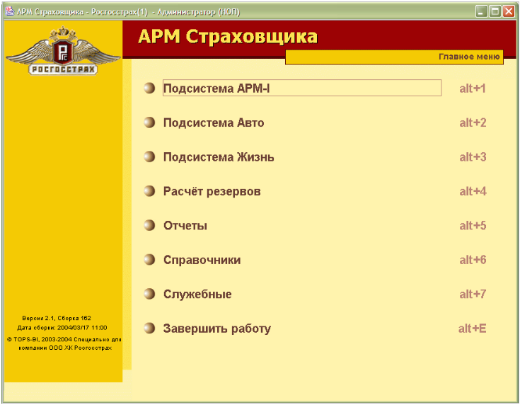
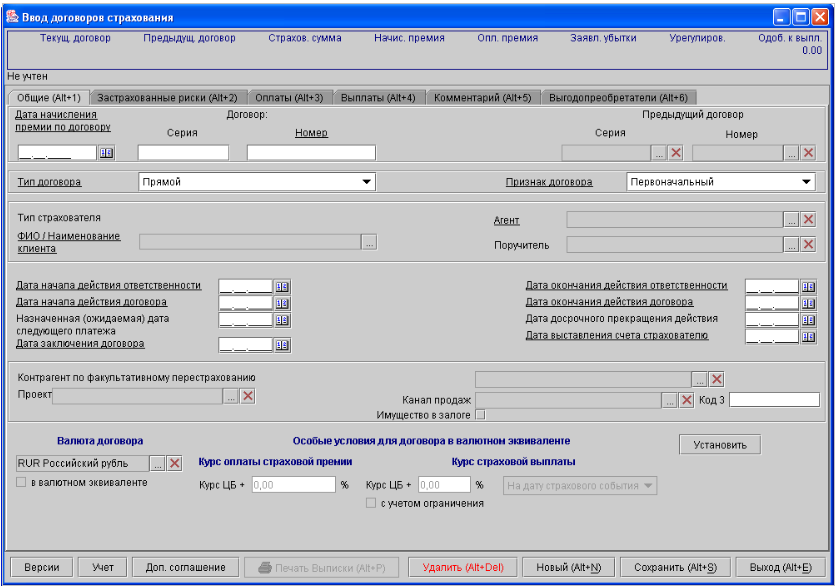
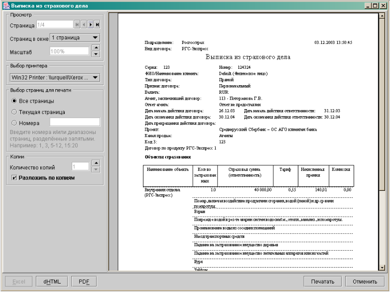
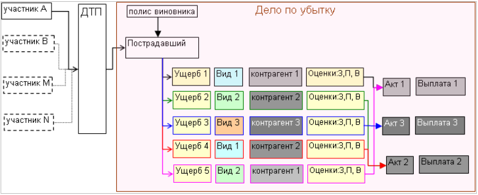
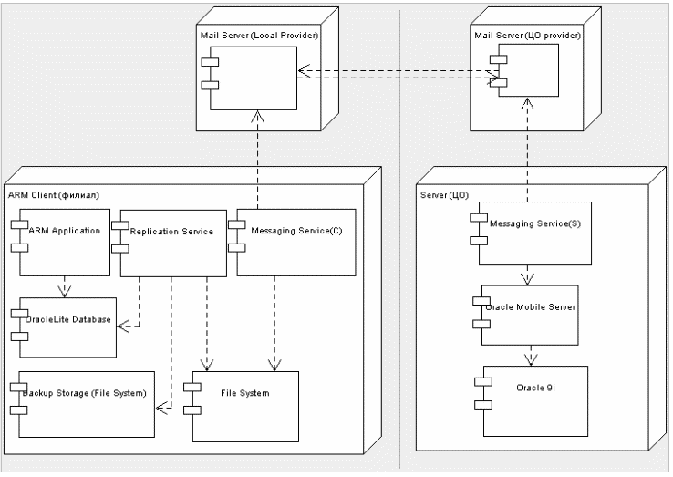
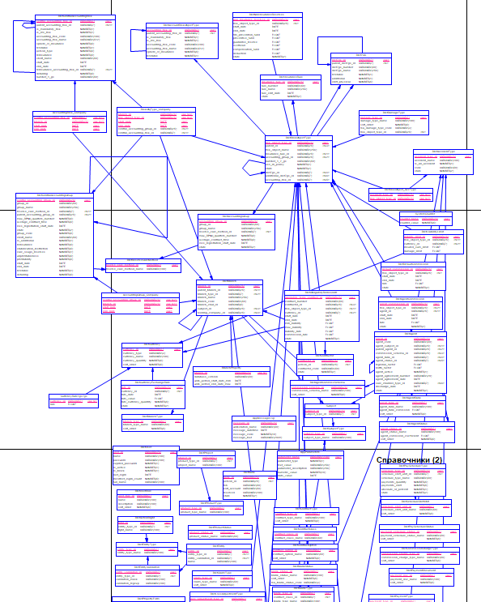

Аппаратно-программный комплекс “АРМ Страховщика” (далее - система) предназначен для директоров по продажам, инспекторов, администраторов, бухгалтеров, специалистов по урегулированию ущербов, операционистов, операторов call-центра компании ООО «ХК «Росгосстрах». Для начала работы с ПО АРМ Страховщика необходимо обладать навыками работы в операционной среде Windows и знаниями в предметной области (страхование). Назначение системы Массовый сбор информации позволяет эффективно вести статистический, управленческий учет, проводить актуарный анализ и формировать адекватную актуарную политику. Это главные цели, достижению которых способствует данная программа. Система разработана таким образом, чтобы максимально оптимизировать рабочие процессы каждого сотрудника Компании. Можно выделить основные функции, которые реализует система:
Аппаратно-программный комплекс “АРМ Страховщика” разработан для того, чтобы оптимизировать работу страховой компании ООО «ХК «Росгосстрах». Система обеспечивает сбор данных со всех регионов. Данные передаются по сети Интернет или могут быть записаны на любой магнитный носитель, который возможно затем передать в центральный офис. В центральном офисе находится основная база данных, где и хранится вся информация. Существует также и обратная связь. По мере возникновения из центрального офиса поступают обновления во все региональные подразделения. Система состоит из нескольких подсистем. Подсистемы содержат несколько разделов. Между разделами и подсистемами существуют определенные связи. Система разработана таким образом, что при изменении важной информации, предыдущие данные сохраняются как версия. Можно выделить три основные задачи, выполняемые системой: учет договоров и сопутствующей документации, учет страховых дел и сопутствующей документации, формирование отчетов. Для учета договоров и страховых дел в системе предусмотрены специальные формы. Все формы построены по единому принципу, но имеют определенные различия. Формирование отчетов в системе происходит автоматически, необходимо только выбрать соответствующую форму и задать параметры отчета. Ещё одну обслуживающую функцию несет в себе ввод информации о бланках строгой отчетности. Система обеспечивает автоматический учет бланков строгой отчетности по автострахованию и страхованию жизни, поэтому каждый раз при получении бланков строгой отчетности необходимо зарегистрировать их в системе. Главное окно системы:  Ввод и редактирование договора страхования. Закладка «Общие»:  Ввод договоров РГС-Экспресс. Пример выписки из страхового дела:  Модель процесса урегулирования убытков:  Описание алгоритма offline репликации между Oracle Lite и Oracle9i:  Репликация между Oracle Lite Database и Oralce 9i Database происходит offline(файловая репликация), за исключением первой синхронизации для создания базы данных в Oralce Lite. Синхронизация между базами данных происходит методом “fast refresh” – клиент(Oralce Lite) загружает изменения в Oracle 9i и изменения для клиента будут выгружены из Oracle 9i. Oracle Lite выполняет выгрузку измененных данных в файл репликации используя Oracle Mobile API. Выгрузка(формирование) файла репликации осуществляется автоматически приложением - Replication Service. Файлы репликации отсылаются на почтовый сервер для последующей синхронизации с Oracle Database 9i. с помощью другого приложения - Messgaing Service(C). На сервере процесс - Messaging Service(S) осуществляет получение файлов репликации от mail сервера и далее пересылает их в Mobile Server используя http транспорт. После выполнения синхронизации Mobile Server формирует ответный файл репликации(изменений) для Oracle Lite Database, который пересылается на почтовый сервер клиента(филиала). На клиенте процесс - Messaging Service(C) осуществляет получение файлов репликации от mail сервера и сохраняет их в файловой системе. Далее Replication Service осуществляет загрузку файлов репликации в Oracle Lite Database. Фрагмент структуры БД, смоделированной в Sybase PowerDesigner:  |